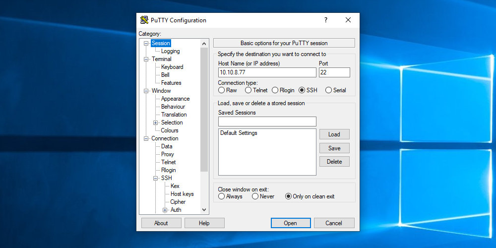
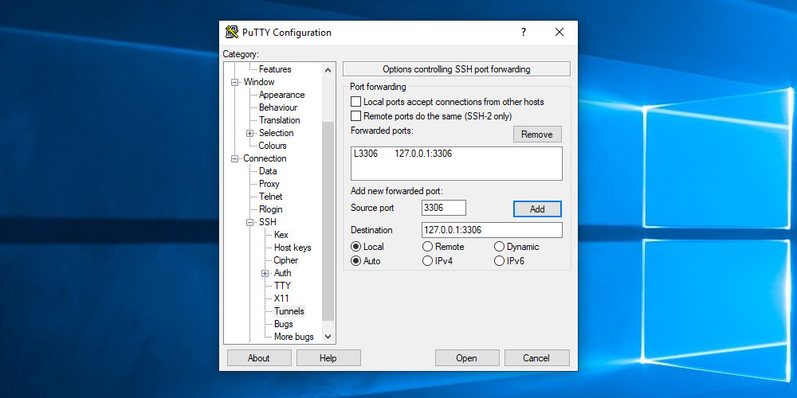
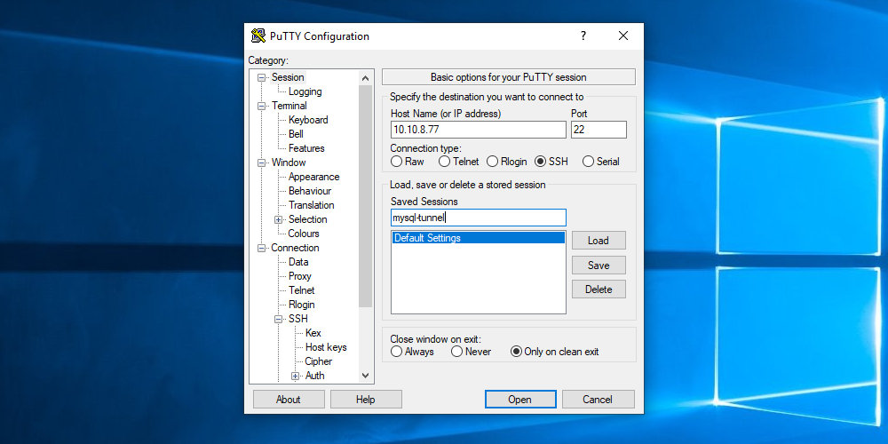
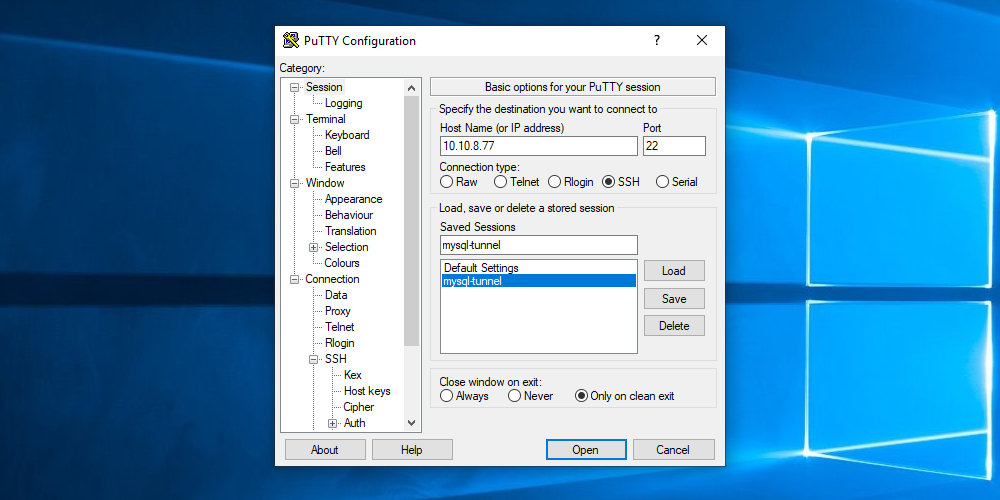
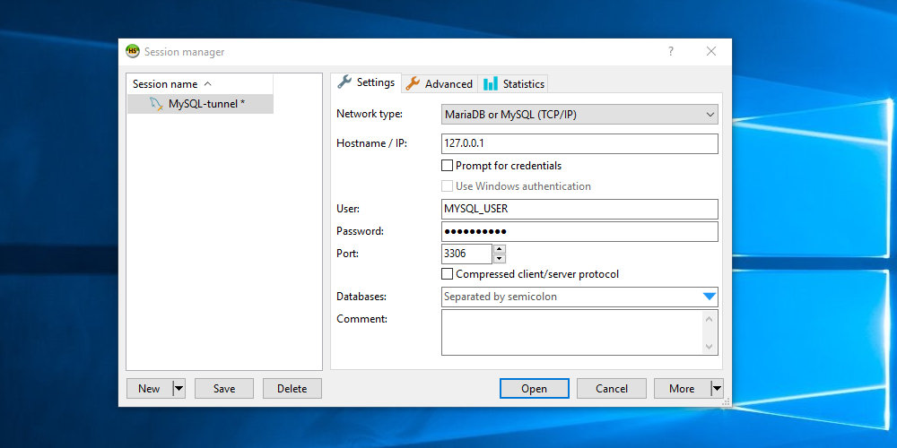

如何通过 SSH 隧道连接到 MySQL
默认情况下， MySQL 服务器仅在 localhost 上侦听，这意味着它只能由在同一主机上运行的应用程序访问。
但是，在某些情况下，您可能希望从远程位置连接到服务器。一种选择是将 MySQL 服务器配置为允许远程连接，但这需要管理权限，这可能会带来安全风险。
一种更安全的替代方法是创建从本地系统到服务器的 SSH 隧道。 SSH 隧道是一种在客户端和服务器计算机之间创建加密 SSH 连接的方法，通过该连接可以中继服务端口。
在本指南中，我们将说明如何创建 SSH 隧道并从远程客户端连接到 MySQL 服务器。相同的说明适用于 MariaDB 。
先决条件
- SSH 客户端。
- 通过 SSH 访问运行 MySQL 服务器的系统。
在 Linux 和 macOS 上创建 SSH 隧道
ssh 客户端已预安装在大多数基于 Linux 和 Unix 的系统上。
如果您使用 Linux 或 macOS 作为操作系统，则可以使用以下命令创建 SSH 隧道：
ssh -N -L 3336:127.0.0.1:3306 [USER]@[SERVER_IP]
使用的选项如下：
-N- 告诉 SSH 不要执行远程命令。-L 3336:127.0.0.1:3306- 创建本地端口转发。本地端口 (3306) ，目标 IP(127.0.0.1) 和远程端口 (3306) 用冒号 (:) 分隔。[USER]@ [SERVER_IP]- 远程 SSH 用户和服务器 IP 地址。- 要在后台运行命令，请使用
-f选项。 - 如果 SSH 服务器正在侦听 22 以外的端口(默认端口)，请使用
-p [PORT_NUMBER]选项指定端口。
运行命令后，系统将提示您输入 SSH 用户密码。输入后，您将登录到服务器，并建立 SSH 隧道。最好设置一个基于 SSH 密钥的身份验证并连接到服务器而无需输入密码。
现在，您可以本地计算机 MySQL 客户端连接 127.0.0.1:3336 来访问远程 MySQL 数据库服务器。
例如，要使用命令行 mysql 客户端连接到 MySQL 服务器，您将发出：
mysql -u MYSQL_USER -p -h 127.0.0.1
MYSQL_USER 是你要访问的远程 MySQL 数据库的用户。
出现提示时，输入 MySQL 用户密码。
要终止 SSH 隧道 CTRL+C ，请在运行 ssh 客户端的控制台中输入。
在 Windows 上创建 SSH 隧道
Windows 用户首先需要下载并安装 SSH 客户端程序。最受欢迎的 Windows SSH 客户端是 PuTTY 。您可以在此处下载 PuTTY 。
执行以下步骤以使用 PuTTY 创建到 MySQL 服务器的 SSH 隧道：
-
启动 Putty ，然后在
Host name (or IP address)字段中输入服务器的 IP 地址：
-
在
Connection菜单下，展开SSH并选择Tunnels。在Source Port字段中输入3306，然后在Destination字段中输入127.0.0.1:3306：
单击
Add按钮添加隧道。 -
返回
Session页面以保存设置，因此您无需再次输入设置。在
Saved Session字段中输入会话名称，然后单击Save按钮。
-
选择已保存的会话，然后单击
Open按钮登录到远程服务器。
将显示一个新窗口，要求您输入用户名和密码。输入用户名和密码后，将登录到服务器，并创建 SSH 隧道。
设置公共密钥身份验证将使您无需输入密码即可连接到服务器。
现在，您可以使用本地 MySQL 客户端连接到远程数据库。
例如，如果您使用的是 HeidiSQL，请在 Hostname/IP 字段中输入 127.0.0.1 ，并在 User 和 Password 字段中输入 MySQL 用户和密码：

结论
MySQL 是最流行的开源数据库服务器，默认仅在 localhost 上侦听传入的连接。创建 SSH 隧道可以使您从本地客户端安全地连接到远程 MySQL 服务器。